TTutorial simple para hacer tu primer Pull Request
Bueno, vamos a listar rápidamente los pasos necesarios para mandar un PR
Empecemos
Un fork es tu propia versión de un repositorio de Github. Este te permite clonar el trabajo de otro proyecto y tenerlo en tu cuenta para que puedas cambiar cosas sin preocupación de perder tus cambios.
Para realizar un fork ingresamos a github y ubicamos el proyecto que deseamos copiar en nuestro github y dar click al botón Fork que se encuentra en la parte superior derecha
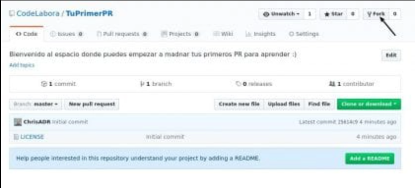 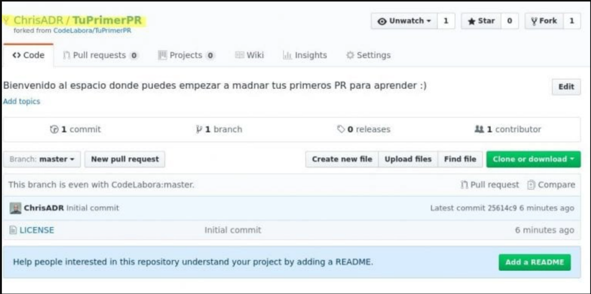¿Que es un CLONE?
Ahora que ya tenemos un repositorio lo vamos a clonar a nuestro equipo. (Asumo que me siguen personas que usan Linux, pero para los usuarios de otros sistemas también existen versiones de git que pueden descargar en su página oficial.
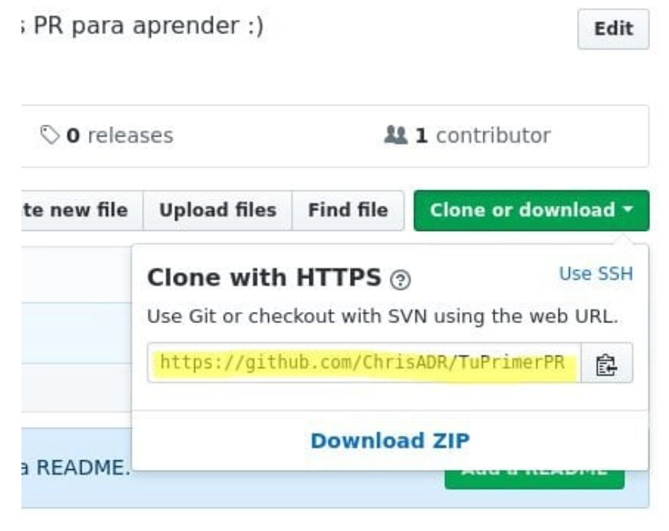Y con nuestro terminal hacemos lo siguiente
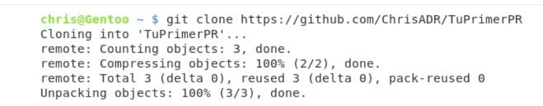Con esto tendremos una nueva carpeta llamada TuPrimerPR en la que estará nuestro proyecto de Github. entramos a la carpeta con el comando «cd TuPrimerPR» y veremos que dentro están los archivos que se encuentran en nuestro fork.
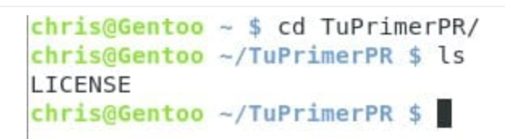(Tengan en cuenta que la cantidad de archivos puede variar dependiendo de lo que encuentren en mi repositorio cuando hagan el fork)
¿Que es un REMOTE?
Este es un paso opcional, pero que evita muchos problemas al momento de trabajar de manera continua en un proyecto. Fork por defecto crea una copia exacta del repositorio, pero en el momento exacto de la creación. Esto quiere decir que si el proyecto sigue avanzando, su repositorio se va a quedar atrasado con el pasar de los días u horas. «git remote » nos permite especificar otro punto de descarga (el proyecto original) y así poder actualizar nuestro proyecto cada vez que vemos que el proyecto padre se está actualizando. Para encontrar tu proyecto padre solo hace falta usar el link que se encuentra justo abajo del nombre de tu repositorio. (Revisen la segunda imagen del apartado Fork). Vamos a agregar este dato a continuación:

Este es el proyecto original (lo vamos a llamar upstream para seguir la corriente.

Como pueden ver, he agregado el remote con » git remote add "nombre", "URL" . Con esto vamos a poder actualizar el proyecto cuando sea necesario, pero no lo vamos a usar ahora porque no es necesario. (Eso lo explico más adelante, o en otro post, dependiendo de la necesidad)
¿Que es un branch?
Los branch (o ramas) permiten crear secciones de código que puedes trabajar en un entorno aislado. Esto quiere decir que lo que hagas en un branch no necesariamente afecta al código original hasta que se utilice un » git merge «. También es una funcionalidad extra que te permite Github, cada vez que tu creas un branch, Github genera automáticamente la fuente del Pull Request cuando es necesario.
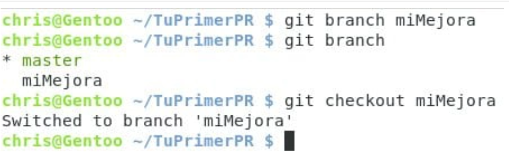Ahora que estamos en nuestra rama especial, podemos trabajar en nuestra contribución.
Cambios
Voy a agregar un par de archivos para que vean cómo se hace.
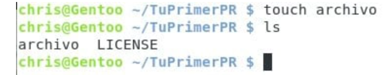«touch » nos permite crear un archivo (si es que no existe) en blanco. con esto podemos pasar a nuestro siguiente paso.
¿Que es un ADD?
» git add » nos permite agregar archivos a nuestro commit (los explico más adelante). Para ver qué archivos puedes agregar se puede utilizar el comando » git status »
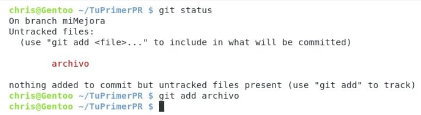Con esto tenemos todo preparado para nuestro Commit
¿Que es un COMMITS?
Los commits son marcas (o hitos) en el tiempo. definen un estado para todos los archivos del proyecto y acumulan los cambios necesarios para llegar desde el principio del proyecto hasta el estado actual. Suena un poco complejo, pero es bastante sencillo, solo recuerda que son las escaleras de tu proyecto. Escribimos » git commit » y nos saldrá una ventana para escribir nuestro mensaje de commit.
Y al finalizar y guardar el texto, veremos algo como:

Donde se muestra un resumen de lo que hace el commit.
PUSH
Con push estamos subiendo a nuestra cuenta de Github todos los commits que tenemos en el equipo que no se encuentran en nuestro repositorio en internet. Esto hará que Github pueda generar el nuevo PR de manera automática
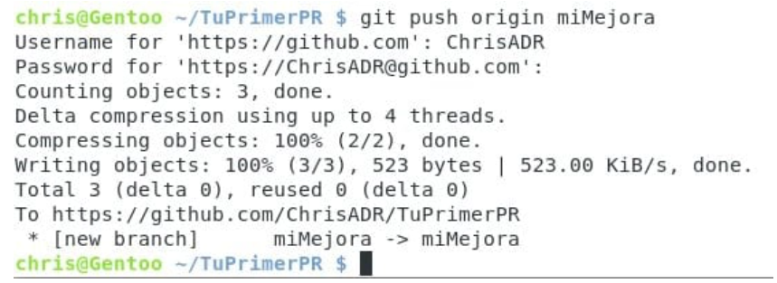Noten que estamos usando el nombre de nuestro branch y que nos solicita nuestro usuario y contraseña. Al final nos muestra que se ha creado el branch miMejora dentro de nuestra cuenta de Github. Vamos a ver en el navegador lo que hemos conseguido. 😉
Como pueden ver, se ha creado una nueva línea que dice «Compare & Pull request». Esta funcionalidad de Github nos permite crear el PR de manera sencilla, vamos a dar click para ver qué sucede.
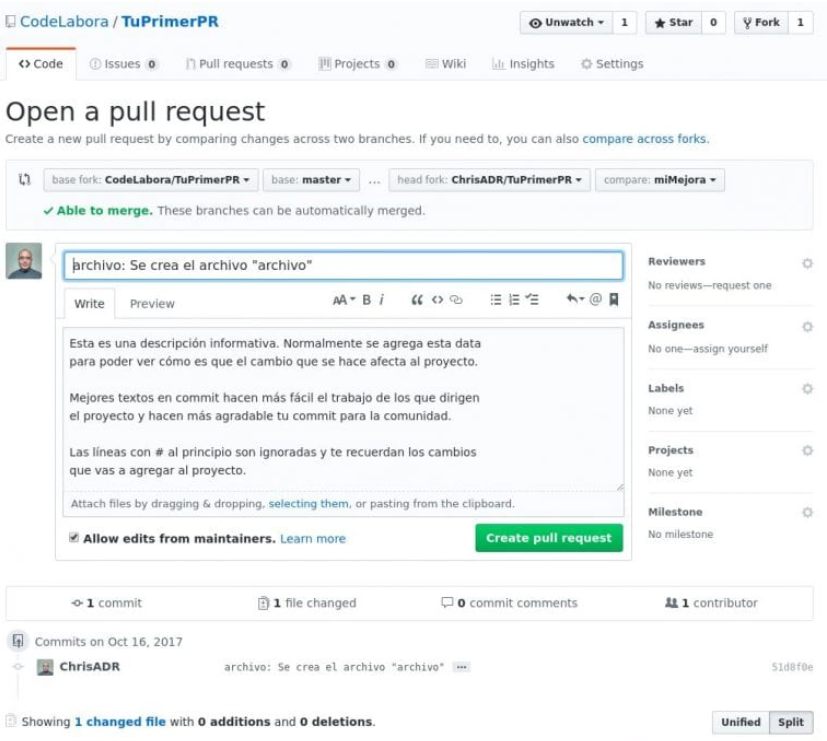Github es bastante inteligente. Como pueden apreciar, partes el commit se agregan al formulario para envío. Solo es necesario dar click al botón y listo 🙂 Sencillo.
EXTRA
Esto es el detrás de cámaras de los proyectos, aparece el PR y el encargado decide si aceptar o no, o escribir más mensajes. En mi caso lo voy a aceptar de manera instantánea.
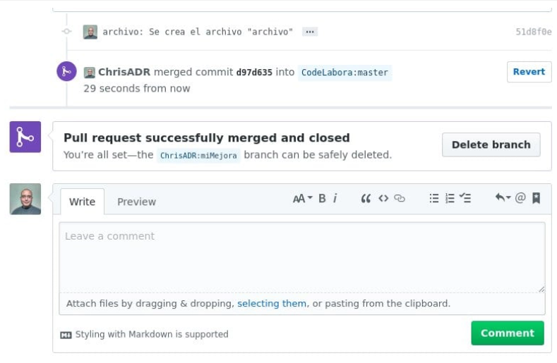Una vez realizado el merge, podrán ver el log de commits del proyecto y ver su nombre en él.
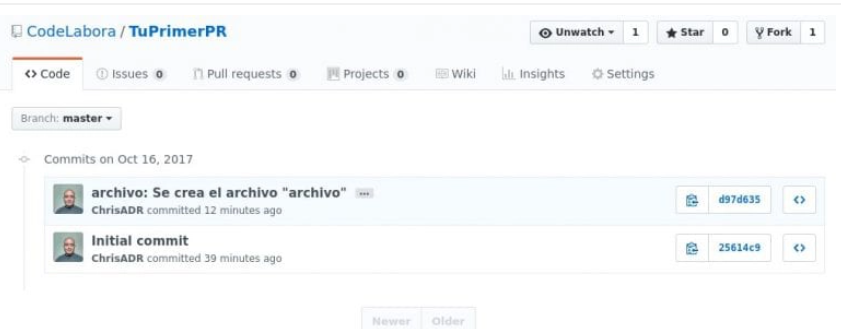Pero ahora tenemos un problema. Ese commit no aparece en nuestro repositorio, solamente en el del proyecto. ¿Recuerdan nuestro paso de remote? Ahora es cuando rinde frutos 🙂 Volvemos a nuestro branch master y hacemos lo siguiente:
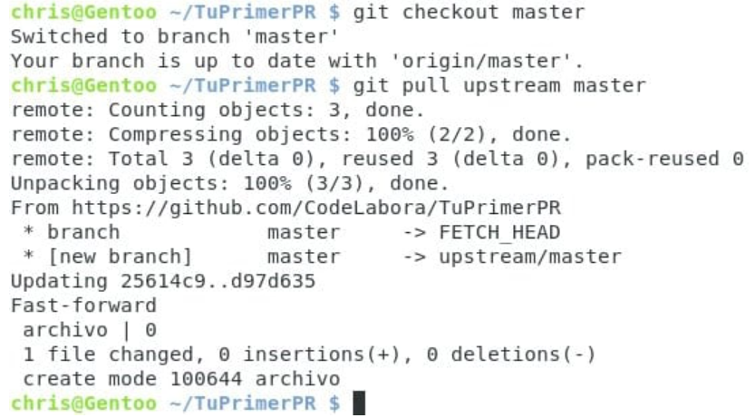Con esto hemos descargado toda la información del proyecto original a nuestro equipo. Como pueden apreciar, ahí aparece nuestro commit. Ahora vamos a guardar todo este trabajo en nuestro repositorio de Github para poder eliminar el branch que tiene el aporte que ya agregaron al proyecto.
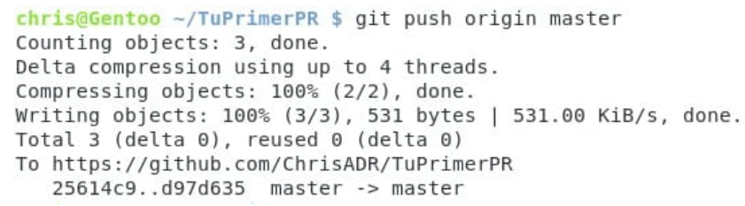Ahora que ya tenemos nuestro repositorio de Github actualizado vamos a borrar nuestro branch, pero primero nos aseguramos que esté dentro de nuestra rama principal (master)

Como pueden ver tuve un ligero error, esto era porque me encontraba en mi branch miMejora al momento de quere borrar. Esto se arregla regresando al branch master.
CONCLUSIÓN
Listo 🙂 tan sencillo como eso. Ahora que dominan los oscuros secretos de Github para mandar PR, espero ver sus contribuciones en diversos proyectos. Y si desean pueden dejar su primer PR en mi repositorio 😉 para el recuerdo. No he tocado mil y un beneficios de Git (OJO, no Github) y como es de esperar de desarrolladores que están ligados a la comunidad del Kernel, Git es una herramienta sumamente poderosa, con cientos de funcionalidades. Para poder tener una mejor idea de lo que hace y todo el poder de Git, les recomiendo mucho este libro. Estoy seguro que les ayudará bastante a mejorar en el manejo de git. Saludos y espero que les ayude 😉